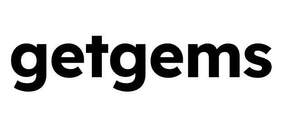

Trade Mark Journal No.2025/035 29 August 2025
UK00004251633 19 August 2025 (9,35,36,41,42)

- Class 9
- Platform software; Computer software platforms; Software applications; Software for Smart Contracts; Server software; Network servers; Internet servers; Communications server software; Computer network server; Virtual server software; Cryptography software; Computer hardware for telecommunications; Downloadable cryptographic keys for receiving and spending cryptocurrency; Downloadable software for generating cryptographic keys for receiving and spending cryptocurrency; Downloadable computer software for use as an electronic wallet; Downloadable computer software for managing cryptocurrency transactions using blockchain technology; Downloadable computer software for blockchain technology; Downloadable computer software applications for minting non-fungible tokens [NFTs]; Computer software relating to digital assets and avatar collection authenticated by non-fungible tokens (NFTs); Computer software enabling users to compile, store, receive, trade and exchange virtual currencies, cryptocurrencies, and digital assets authenticated by non-fungible tokens (NFTs); Computer program for blockchain data storage; Computer software for the purchase and sale of rights to digital visual images, digital assets and avatar collection authenticated by non-fungible tokens (NFTs); Downloadable e-wallets; Crypto e-wallets used in the blockchain ecosystem; Web application for blockchain technology and management of cryptocurrency assets; Business to consumer (B2C) app for cryptocurrency tracking and traffic of crypto assets and related products, network operations, transactions, games and collectibles built on a decentralized and open internet platform in blockchain; Interface software; Dashboard software; Downloadable computer software for managing crypto asset transactions using blockchain technology; Cryptocurrency hardware wallets; Web application software; Downloadable digital image files authenticated by non-fungible tokens [NFTs]; Software application for the blockchain ecosystem offering various features: access to users e-wallets, display of users' digital assets and digital files authenticated by tokens and non-fungible tokens (NFTs), access to online exchanges, access to information on cryptocurrency rates, aggregation of anonymized data about blockchain users; Software relating to the management of digital assets and collections of downloadable digital image files authenticated by non-fungible tokens (NFTs); Computer software enabling users to compile, store, receive, trade and exchange virtual currencies, cryptocurrencies, digital assets and digital files authenticated by non-fungible tokens (NFTs); Decentralized social networking software platform that integrates Web3 features, enabling users to engage in social interactions while leveraging blockchain technology; Communications software for electronically exchanging text, images, graphics, data, audio and video images, and for electronic use, exchange and processing of virtual currency.
- Class 35
- Market studies; Evaluation of business opportunities; Business consultancy and advisory services; Computerized file management; Compilation of information into computer databases; Business data analysis services; Data processing; Assistance, advisory services and consultancy with regard to business organization; Updating and maintenance of data in computer databases; Systemization of information into computer databases; Preparation of business profitability studies; Marketing research; Corporate communications services; Business research; Business organization and operation consultancy; Marketing, advertising and promotion services; Product marketing; On-line advertising and marketing services; Publication of advertising material on-line; Online advertising via a computer communications network; Customer relationship management; Online business networking services; Online and offline marketing and advertising of crypto e-wallets used in the blockchain ecosystem; Retail services relating to downloadable digital image files authenticated by non-fungible tokens [NFTs]; Provision of an online marketplace for buyers and sellers of downloadable digital image files authenticated by non-fungible tokens [NFTs]; Providing on-line auction services; On-line trading services in which seller posts products to be auctioned and bidding is done via the Internet; Conducting interactive virtual auctions; Arranging and conducting online auctions in the field of digital art images and digital assets authenticated by non-fungible tokens (NFTs); Provision of an online marketplace for buyers and sellers of goods and services; Provision of an online marketplace for buyers and sellers of digital art images and other blockchain-based digital assets and collections of virtual goods authenticated by non-fungible tokens (NFTs); Providing an online marketplace for buyers and sellers of crypto collectibles; Operating an online marketplace which offers crypto collectibles and blockchain-based non-fungible assets and where users can earn and trade virtual assets; Providing marketing and promotion services related to online marketplaces which offer crypto collectibles and blockchain-based digital assets and collections of virtual goods authenticated by non-fungible tokens (NFTs), digital visual images, avatar collections authenticated by NFTs; Operating a non-fungible token (NFT) marketplace for the purchase and sale of rights to digital visual images, digital assets; Online community management services; Organization, operation, management and supervision of blockchain-based loyalty and incentive schemes which use cryptocurrency via blockchain-based digital transactions.
- Class 36
- Financing services; Financial transactions via blockchain; Financial exchange of crypto assets; Financial and monetary transaction services in the blockchain environment; Management of crypto asset transactions using blockchain technology, including electronic funds transfer provided via blockchain technology; Asset and portfolio management; Financial asset management; Financial trading of cryptocurrency; Electronic transfer of cryptocurrency; E-wallet payment services; Virtual currency exchange; Provision of financial services by means of a global computer network or the internet; Financial and monetary services; Asset management services.
- Class 41
- Education; Providing of training; Entertainment; Sporting and cultural activities; Organization of exhibitions for cultural or educational purposes; Conducting educational workshops in the field of business; Arranging and conducting of conferences, congresses and symposiums; Providing education, training and information programs regarding the blockchain ecosystem, decentralized social networking platforms, cryptocurrency, virtual currency, smart contracts and digital assets authenticated by non-fungible tokens [NFTs].
- Class 42
- Hosting of transaction platforms on the internet; Development, updating and maintenance of software and database systems; Data security services; Encryption, decryption and authentication of information, messages and data; Provision of information relating to technological research; Technological consultation services; Information technology [IT] consultancy; Computer technology consultancy; Computer software consultancy; Telecommunications technology consultancy; Telecommunication network security consultancy; Technological research; Research and development of new products for others; Cryptomining; Data mining; Mining of crypto assets; Graphic design of promotional materials; Data security consultancy; Data encryption services; Computer system analysis; Data authentication via blockchain; Certification of data via blockchain; Data storage via blockchain; Computer programming of smart contracts on a blockchain; Programming of software for Internet platforms; Hosting of platforms on the Internet; Programming of software for information platforms on the Internet; Development of computer platforms; Software as a service [SAAS] services; Platform as a service (PAAS); Configuration of computer software; Design and development of computer hardware and software; Scientific research; Product development for others; Industrial design; Design, software development, maintenance and update services of crypto e-wallets used in the blockchain ecosystem; Hosting, design, software development, maintenance and update services of software applications for blockchain technology and management of cryptocurrency assets; Hosting, design, software development, maintenance and update services of a business to consumer (B2C) application designed for cryptocurrency tracking and for traffic of crypto assets and related products, network operations, transactions and collectibles built on a decentralized and open internet platform in blockchain; Computer software customisation services; Hosting, design, software development, maintenance and update services of a marketplace platform built on the open network blockchain, offering various functionalities: buying, selling, minting, and transferring assets authenticated by non-fungible tokens (NFTs); Hosting, design, software development, maintenance and update services related to a decentralized social networking platform that integrates Web3 features, enabling users to engage in social interactions while leveraging blockchain technology; Providing online non-downloadable computer software for minting non-fungible tokens [NFTs]; Development of software for communication systems.
TOP INNOVATIONS LTD
Representative: Stobbs